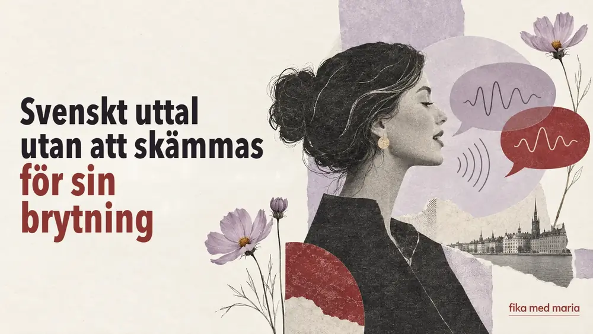
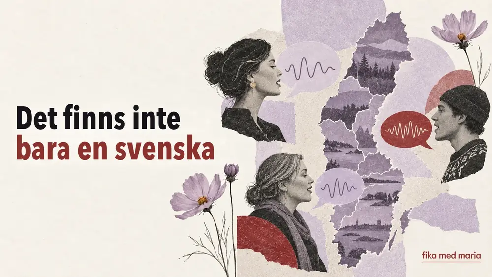
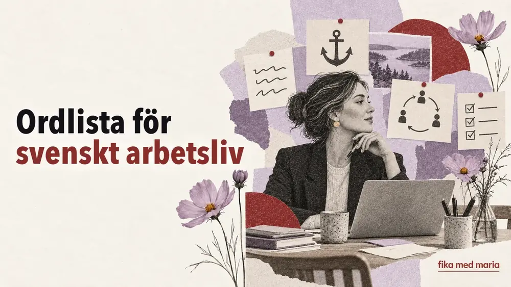
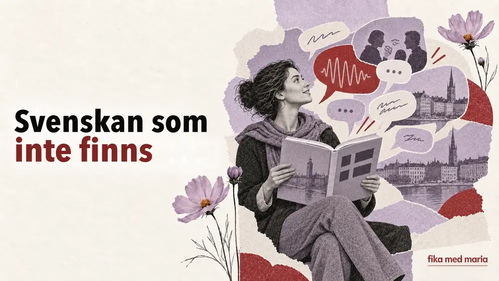
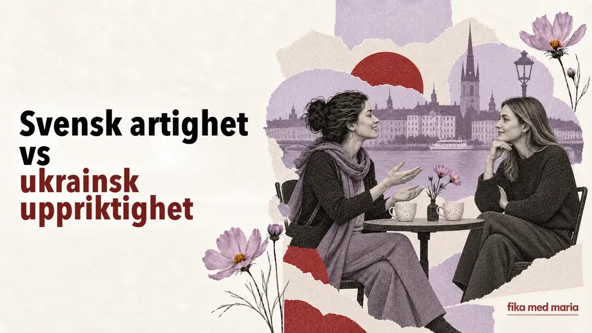
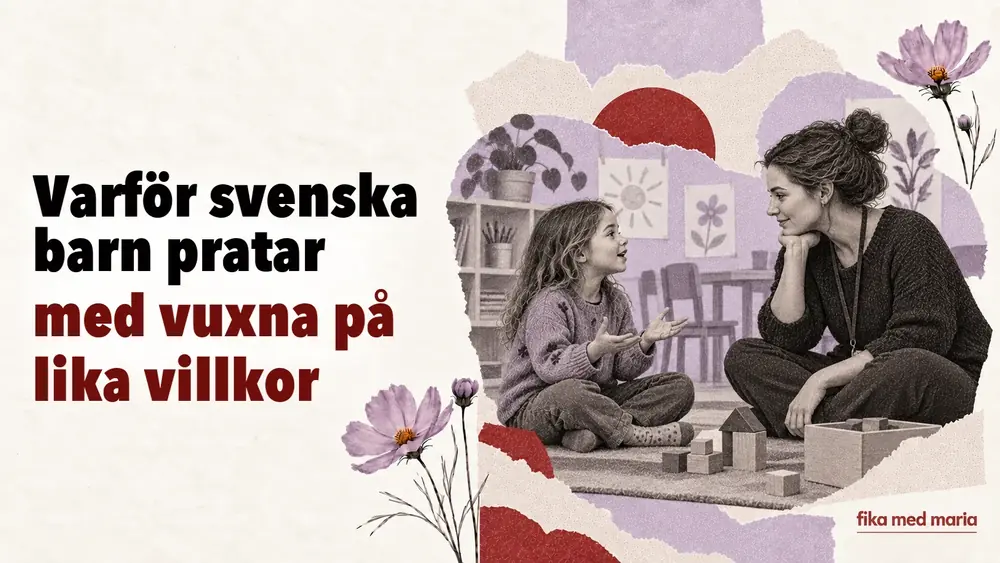

Kan man låta svensk utan att bli av med sin brytning?
Måste man bli av med sin brytning för att prata bra svenska? Vi går igenom uttal, rytm, begriplighet och realistiska mål.
Levande svenska, ord och uttryck, svensk kultur, livet i Sverige och tips på hur du lär dig språket regelbundet.

Måste man bli av med sin brytning för att prata bra svenska? Vi går igenom uttal, rytm, begriplighet och realistiska mål.

Varför svenskan låter olika i olika regioner, vad man ska räkna som standard och vilket uttal man som elev bör förbereda sig på.

Vad betyder prestigelös, förankra, avstämning, återkoppling och högt i tak – och vad säger orden om arbetslivet i Sverige?

Varför personlig frihet i Sverige går hand i hand med köer, överenskommelser och regler – genom språket och vardagssituationer.

Varför skiljer sig talad svenska så mycket från lärobokens dialoger? Vi går igenom kortformer, partiklar och fraser som svenskar verkligen använder.

Så känner du igen kritik, avslag och irritation på svenska, även när den du pratar med uttrycker sig lugnt och artigt.

En enkel förklaring av fem svenska småord som ändrar tonen i en mening: ju, väl, nog, typ och liksom – med levande exempel.

Varför ukrainare och svenskar visar omtanke, tackar nej och ställer personliga frågor på olika sätt – med exempel på svenska fraser.

Varför svenska barn säger du till vuxna, uttrycker att de inte håller med och är med och fattar beslut – med användbara fraser för föräldrar.

Fika är mer än kaffe och bulle. Hur fika fungerar hemma och på jobbet, vad man pratar om och vilka svenska fraser du behöver.

Hur orden fredagsmys, lillördag, lördagsgodis och söndagsångest beskriver vardagslivet och veckans stämning i Sverige.

Hur engelskan, sociala medier, ungdomsslang och det flerspråkiga Sverige förändrar modern svenska – och vad av det du som studerar svenska bör lära dig.